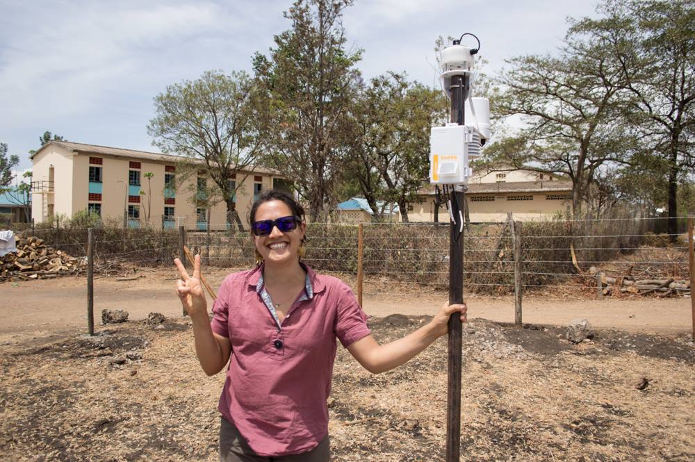
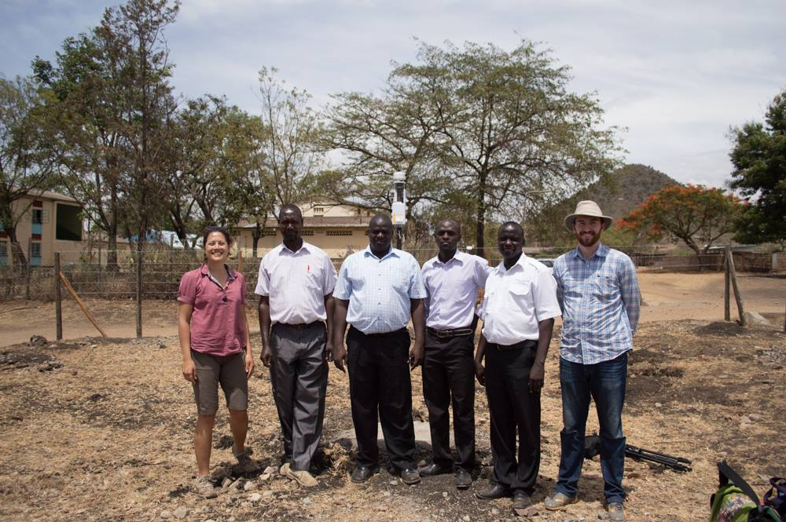
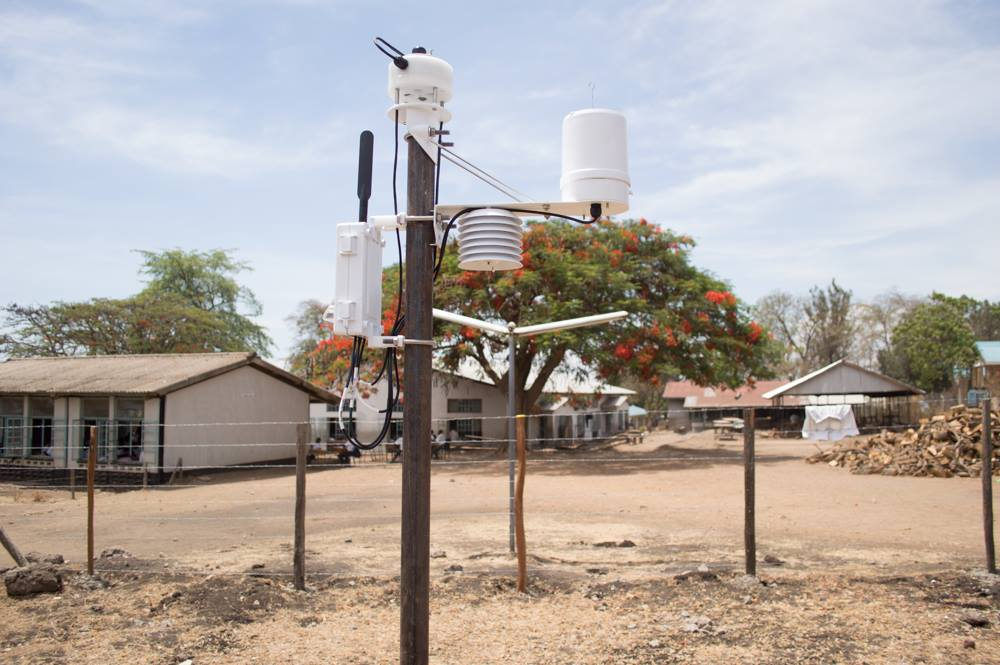

Installing a new TAHMO weather station
POSTED 24 MARCH 2015
I'm now three months into my work as East Africa Field Director for TAHMO. Things have been moving quickly. In the month of March alone I've participated in a UNDP workshop in Kampala, met with the board of directors of the Uganda National Meteorological Authority, presented at the Global Forum on Innovations in Agriculture in Abu Dhabi, and attended the Global Resilience Partnership workshop in Nairobi. It's been quite a learning experience representing TAHMO among such a variety of audiences.
The more exciting part of my job is installing weather stations, and thankfully I was able to do that this month as well. My colleague Leah Tai, TAHMO's School Program Coordinator, traveled to Kenya this month to expand our School 2 School program. The idea is to pair schools in Africa with schools in the United States. Each school has their own weather station and students can collaborate in a common curriculum to compare data and learn from their international partners. Leah brought two weather stations with her to Kenya and we installed the first of two at Homa Bay High, near Lake Victoria. Here is a timelapse of the installation:
This weather station monitors precipitation, wind speed and direction, temperature, relative humidity, barometric pressure, and solar radiation. The data is accessible to our partner schools via a web portal.
Leah with the completed weather station:
Leah and I with teachers from Homa Bay High. LTR: Leah, head geography teacher Tom Auko, deputy principal Zachary Kasera, geography teacher Elvis Ayaga, geography teacher Dan Orobi, and me.

The completed weather station:

Over the next several months I will be installing dozens more of these stations. We expect to have approximately 35 in Kenya by the end of the year. The ultimate goal is to install 20,000 stations across sub-Saharan Africa. So we still have a ways to go.